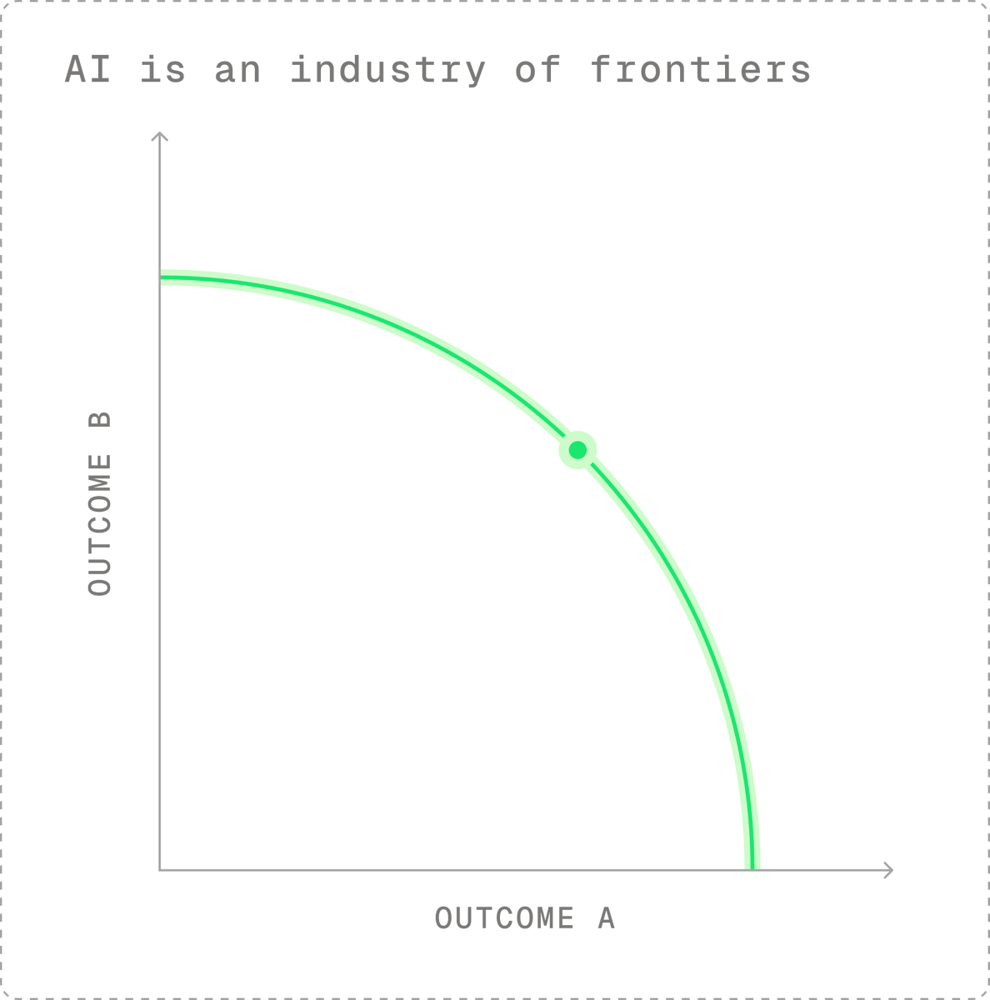
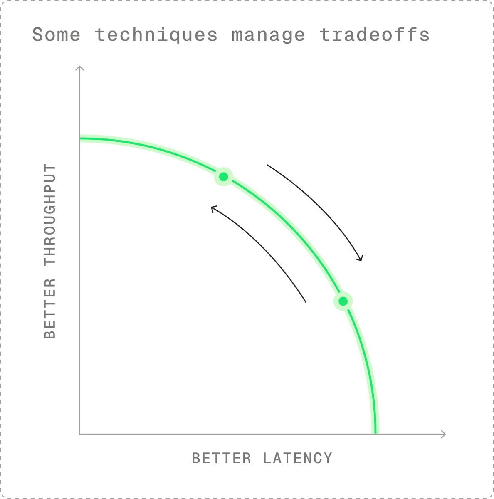
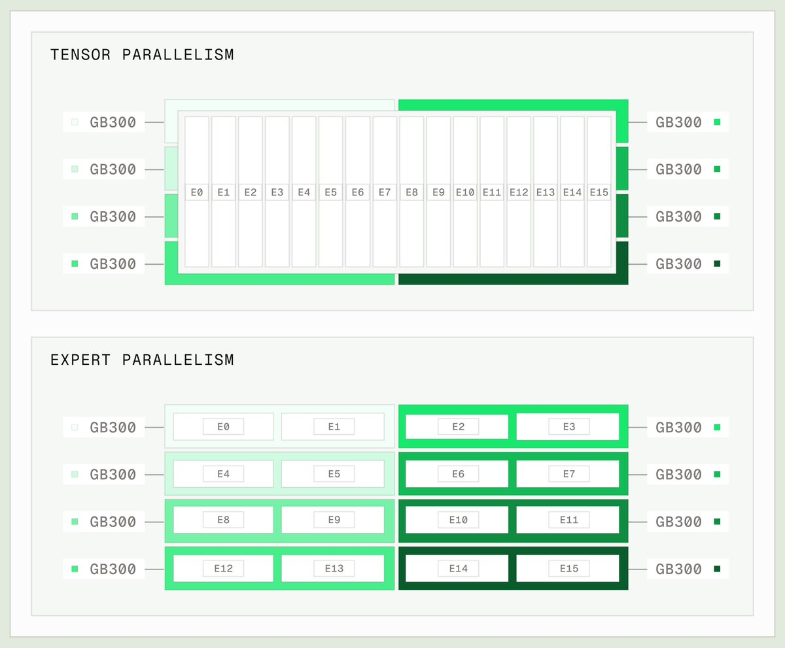
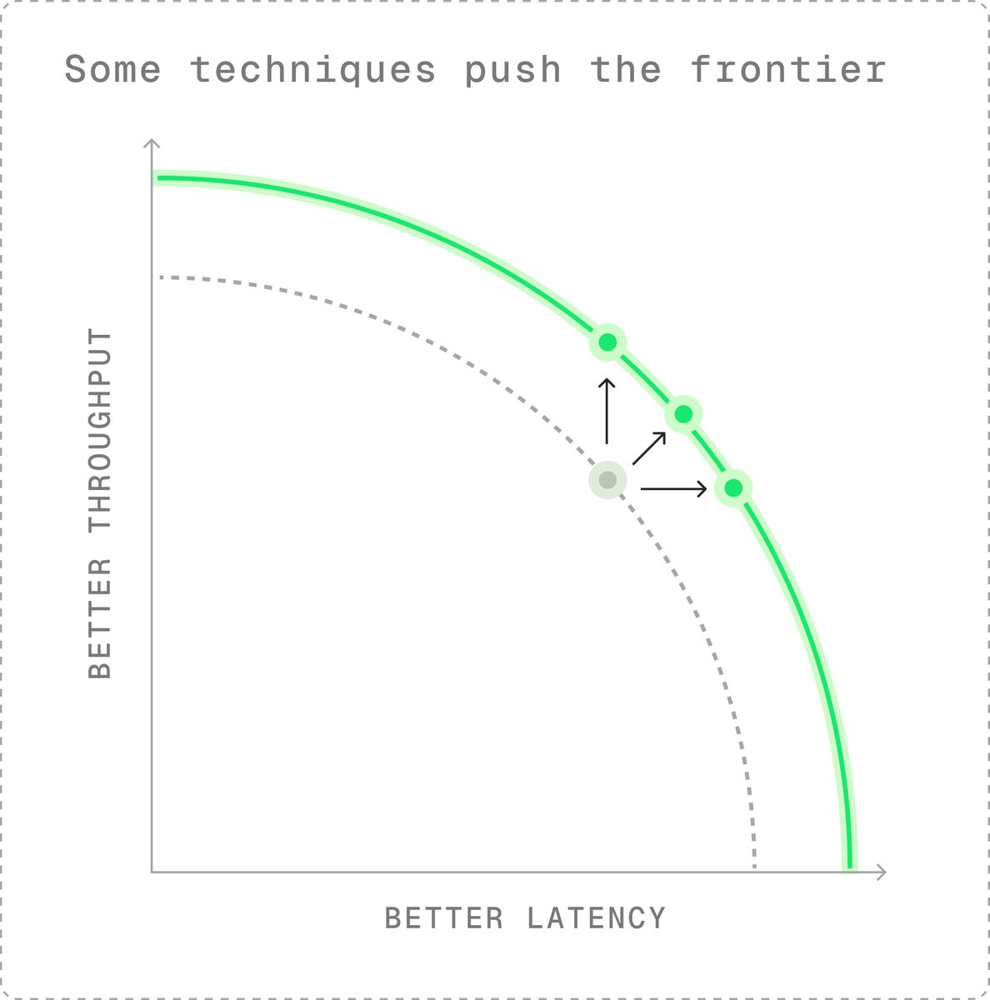
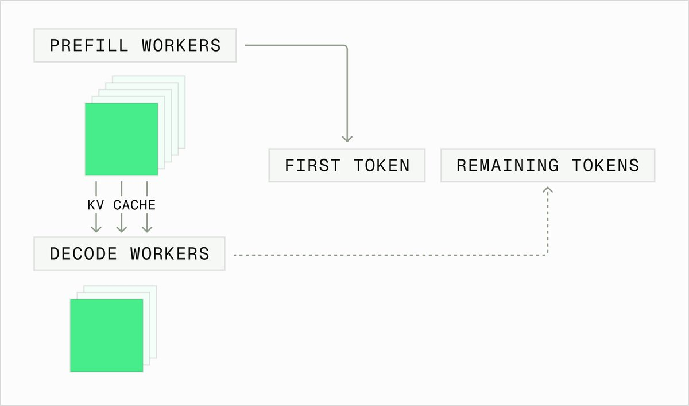

LLM推理也有一道「效率前沿」：最常见的是延迟与吞吐（成本）的权衡，也可以拿质量换吞吐（量化/蒸馏/剪枝）、拿智能换速度（推理等级）。engineer能用的技术分两类：在权衡中把部署移动到前沿上某一点，或把整个前沿推开。
本文是X博主Philip Kiely的同名长文全中文编译，以GLM-5.3 / Kimi K3做agentic coding且开启KV cache复用与KV-aware路由为假设场景，系统梳理批量、并行、量化、内核优化、投机解码、P/D分离部署。
在AI行业中，我们借用了经济学家的“效率前沿”一词，用来讨论管理权衡，最常见的是模型成本与能力之间的权衡。如果一个模型在给定成本或规模下提供最高程度的智能，那么它就是“前沿模型”。

推理工程中同样存在效率前沿。这通常表现为延迟与吞吐量（决定成本）之间的权衡，尽管我们也可以通过量化、蒸馏和剪枝来交换质量以换取吞吐量，或以推理级别的形式用智能换取速度。
推理工程师可用的技术分为两类：
第一类（在效率前沿上移动部署）：在效率前沿上移动部署，通过两个因素之间的权衡实现。
第二类（推动整个前沿外移）：推动整个前沿外移，为特定部署创造更多整体效率，这些效率可以分配给任何最有益的结果。
两类技术都极具价值。
通过权衡，能够定位到效率前沿上的任意一点非常有用。牺牲每用户速度，可以构建高吞吐、低成本的批处理工作负载管道。当延迟敏感用户支付意愿高时，牺牲吞吐量以提升速度则合情合理。
当然，推动整个前沿外移极为有用。解锁更多效率带来的增益，可以分配给更低的延迟、更高的吞吐量，或两者的结合。
本文详述了哪些推理工程技术能让你定位到前沿上的某一点，哪些技术能推动整个前沿外移。本文假设我们运行如GLM-5.3或Kimi K3这样的LLM（大语言模型），用于智能体编码，并启用KV缓存重用和最优KV感知路由。
在生产中达到特定目标，往往不在于发现新颖方法，而在于根据流量特性找到正确的配置组合。
实践中，效率前沿非常崎岖不平。并非结果之间的平滑连续线，微小的变化可能带来巨大影响。这些断点往往不直观，必须通过扫描实验来经验性地发现。
延迟与吞吐之间最明显的权衡来自批量大小。批量是指并发处理的请求数量。虽然token级连续批处理意味着无需等待批次启动而产生延迟，但配置的批量大小决定了每用户延迟和整体吞吐。
批量大小较小时，每用户延迟表现优异，但每个GPU生成的总token数较少，这意味着每个token的成本相当高。增大批量大小则产生相反效果：每用户延迟变差，但整体吞吐提升，成本降低。

当今的LLM（大语言模型）参数规模达数千亿甚至数万亿，必须分布在多个GPU上。其在GPU间的共享或并行方式可提升延迟或吞吐。
对于延迟敏感型部署，应重点增加Tensor Parallelism（TP）。尽管TP涉及昂贵的全对全通信，但由于这些操作在高带宽NVLink互连上速度较快，因此能有效降低延迟。
Expert Parallelism（EP）可同时改善延迟和吞吐。较低的EP度通常对应更优的延迟，而宽EP（包括跨整机架GPU的EP）通常支持更高的吞吐。
另一种提升吞吐的并行技术是Attention Data Parallelism（ADP）。该技术复制注意力层以进行并行计算，从而提升系统吞吐，但会牺牲单请求速度。

量化，即以较低精度运行模型的权重、激活值和/或KV cache值，可同时改善延迟和吞吐。量化模型在服务权衡上推动了效率前沿的扩展。
然而，量化引入了质量与服务效率之间的新权衡。这是一个尤为陡峭的前沿，在几乎不降低模型质量的情况下即可大幅提升服务效率，尤其是在使用MXFP4和NVFP4等微缩放浮点格式时。
这些技术是头条新闻的主角。提升整体性能是推理工程中最有趣的部分。
最妙的是这些技术往往能叠加增效。例如，通过更好的硬件将性能翻倍，同时通过更好的软件也将性能翻倍，意味着整体服务能力提升四倍，这可以在延迟和吞吐之间进行分配。

CUDA内核是一种低级函数，执行推理过程中的单个片段，如矩阵乘法。提升单个内核的性能以及推理引擎中前向传播的端到端性能，意味着生成每个token所需的资源更少。这些效率提升在整个技术栈中叠加，推动性能前沿不断扩展。
关于内核级性能的更多内容，请阅读Baseten实习生Brian Li的精彩文章。
投机解码是猜测模型可能生成的token，然后验证这些猜测的过程。当投机解码刚出现时，这需要在延迟和吞吐之间做出权衡：投机成本高、序列长度短、接受率低，意味着投机解码仅在小批量大小下可行。
如今，EAGLE-3、DSpark和DFlash等技术仍与主模型循环竞争资源，在一定程度上限制了最大批量大小。然而，得益于这些技术的强劲表现，尤其是在输出token序列相对可预测的代码生成任务上，它们通过跳过前向传播带来效率提升，同时以每用户每秒更多token的形式直接降低延迟。
P/D分离，即将预填充和解码分配到专用工作节点，是优化大规模LLM部署的策略。独立运行预填充和解码意味着工作节点可以针对推理各阶段的独特特征进行优化，并且预填充与解码工作节点的比例可以根据输入输出序列长度和来自流量的缓存命中率进行调整。

本文提供了一个基础概览：引擎工程师如何在「管理权衡」与「提升系统级性能」两类技术之间取舍。要深入每一项技术，可读作者的开源书籍《Inference Engineering》。
参考：https://x.com/philipkiely/status/2094916428076106029